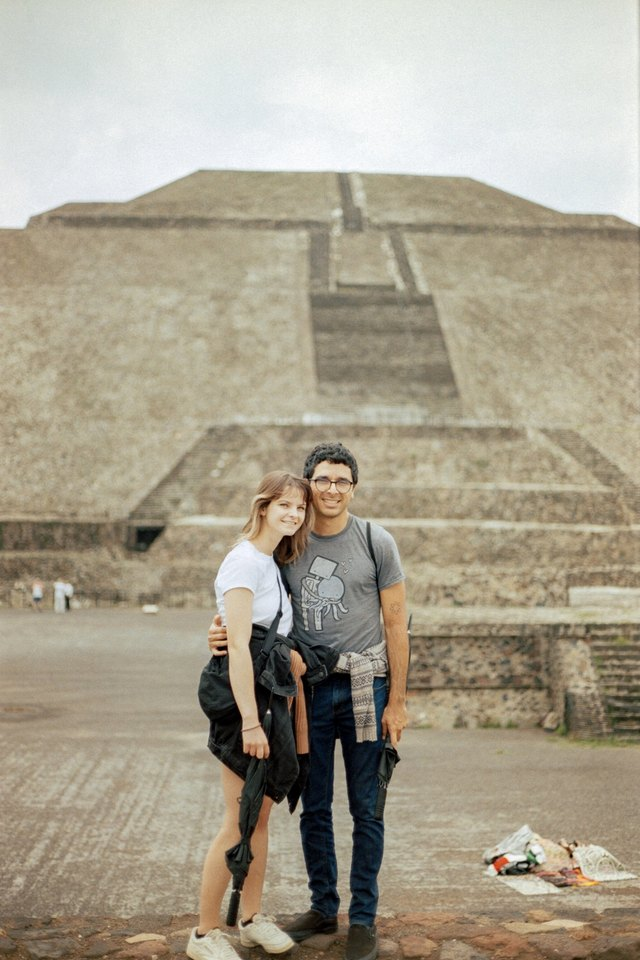

About me


Welcome to my small website!
I love the intersection of different fields of research and scientific philosophies. I'm finishing a PhD in Applied Mathematics at UC Santa Cruz, in the Theoretical and Applied Complex Systems Lab, where I work on getting machine learning surrogates to emulate complex, multiscale phenomena while abiding by physical constraints and retaining interpretability. My projects span equation discovery in experimental systems, machine learning architecture design, and applying these designs to real-world systems.
Before this avenue of research, I completed an MS in Physics at San Francisco State and a BS in Physics at Stanford. I conducted research on double-beta decay, studying the properties of novel light detectors called silicon photomultipliers. I worked on fusion, implementing machine learning algorithms to detect the onset of instabilities and disruption events. And I spent three years at UCSF as a bioinformatician, studying cancer immunology and cellular genomics.
Away from the screen and equations, I play volleyball, mountain bike, hike and camp, work on DIY projects, design speakers, host multi-genre music events, make electronic music, and play sitar.